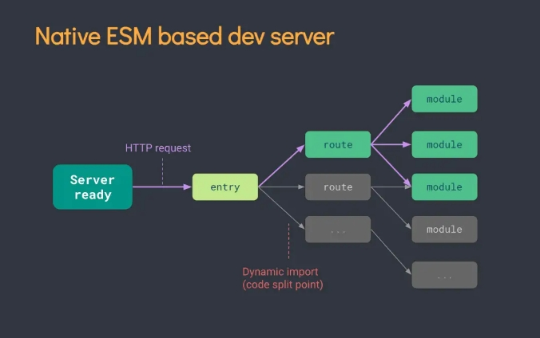
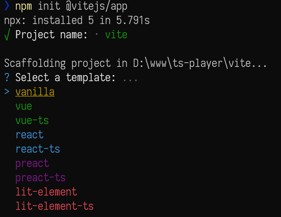

简介
vite —— 一个由 vue 作者尤雨溪开发的 web 开发工具，他基于浏览器原生 ES imports 的开发服务器。利用浏览器去解析 imports，在服务器端按需编译返回，完全跳过了打包这个概念，服务器随起随用。它具有以下特点：
- 快速的冷启动
- 即时的模块热更新
- 真正的按需编译
原理
在过去的 Webpack、Rollup 等构建工具的时代，我们所写的代码一般都是基于 ES Module 规范，在文件之间通过 import 和 export 形成一个很大的依赖图。
这些构建工具在本地开发调试的时候，也都会提前把你的模块先打包成浏览器可读取的 js bundle，虽然有诸如路由懒加载等优化手段，但懒加载并不代表懒构建，Webpack 还是需要把你的异步路由用到的模块提前构建好。
当你的项目越来越大的时候，启动也难免变的越来越慢，甚至可能达到分钟级别。而 HMR 热更新也会达到好几秒的耗时。
Vite 则别出心裁的利用了浏览器的原生 ES Module 支持，直接在 html 文件里写诸如这样的代码：
1 | // index.html |
Vite 会在本地帮你启动一个服务器，当浏览器读取到这个 html 文件之后，会在执行到 import 的时候才去向服务端发送 Main.vue 模块的请求，Vite 此时在利用内部的一系列黑魔法，包括 Vue 的 template 解析，代码的编译等等，解析成浏览器可以执行的 js 文件返回到浏览器端。
这就保证了只有在真正使用到这个模块的时候，浏览器才会请求并且解析这个模块，最大程度的做到了按需加载。
基于浏览器 ES module 来打包 web 应用还有snowpack。不同的是, vite 对依赖预处理采用了 esbuild 打包——使用 Go 编写，并且比以 JavaScript 编写的打包器预构建依赖快 10-100 倍。
我们截取部分开发环境生成的代码:
1 | // index.html |
启动方式
原生 ESM 依赖时的链路图：

vite 只启动一台静态页面的服务器，对文件代码不打包，服务器会根据客户端的请求加载不同的模块处理，实现真正的按需加载。
一个特别典型的技术方案——skypack 的例子:
1 | <script type="module"> |
对于热更新问题，vite 采用立即编译当前修改文件的办法。同时 vite 还会使用缓存机制( http 缓存 => vite 内置缓存 )，加载更新后的文件内容。详情
所以，vite 具有了快速冷启动、按需编译、模块热更新等优良特质。
综上所述，vite 构建项目与 vue-cli 构建的项目在开发模式下还是有比较大的区别：
Vite 在开发模式下不需要打包可以直接运行，使用的是 ES6 的模块化加载规则；Vue-CLI 开发模式下必须对项目打包才可以运行。
Vite 基于缓存的热更新，Vue-CLI 基于 Webpack 的热更新。
上手步骤
当前官方文档已经很详细了
- 编写
vite配置文件vite.config.js, 使用typescript时为vite.config.ts,这时需要tsconfig.ts,可使用vite-tsconfig-paths来处理处理 typescript 路径映射 - 编写入口文件
index.html, 注意要使用 ES Module 方式引入main.js或main.ts等逻辑代码入口
易于上手的插件
Vite 从 preact 的 WMR 中得到了启发，把插件机制做成兼容 Rollup 的格式。
目前和 vite 兼容或者内置的插件，可以查看vite-rollup-plugins。
官方@vitejs/app
当前官方@vitejs支持的模板有限，并且还不支持Vue2。
1 | npm init @vitejs/app |
后会得到如图:

vite-plugin-vue2
支持 vue2, 目前大部分的支持vue2的模板仓库都依赖此插件
@rollupllup/plugin-alias
在 vite，仍至下一版本的vue-cli，尤大都会建议在引入文件的同时要写下文件后缀(相关issue)，不带文件后缀下 vite会报错找不到模块。
使用 @rollup/plugin-alias 后：
1 | import { defineConfig } from 'vite' |
vite-plugin-components
这是个自动导入components组件的插件，还能配置多个ui组件库, 支持 Vue2 (基于vite-plugin-vue2) 和 Vue3，墙裂推荐
nuxt-vite
针对 Nuxt 项目的打包插件
在这里使用 @rollup/plugin-alias 和 vite的配置alias均无效, 只能在 vscode 中全局正则匹配替换来加上文件缀: 勾选 使用正式表达式 (Alt+R)
1 | @\/components\/([^']*) |
目前坑较多
vitete-plugin-vue-gql
支持vue3和graphql语法声明
create-xc-app
支持 Rust 和 Deno 的开发模板

vite-awesome
每个框架和工具都应该有自己的Awesome，才算是合格的产品。
注意事项
- 不可使用
process.env，而是使用import.meta.env来判断开发环境, 见Env 变量和模式 - 默认情况下，Vite 期望所有依赖项都运送 ES 模块，在这种情况下，有关依赖项使用 cjs 语法。
- 对SSR的支持不足